01메인 전체 (PC 1600px)A_Module/Publishing/index.html 을 크롬으로 연다 (창 폭 1600px)02메인 전체 (모바일 480px, 메뉴 아이콘만 보임)창 폭을 480px 로 줄인다
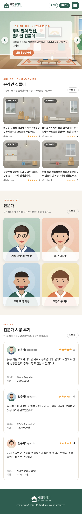
03모바일 메뉴 아이콘에 마우스 오버 → 메뉴 5개 펼침480px 에서 오른쪽 위 아이콘에 마우스를 올린다
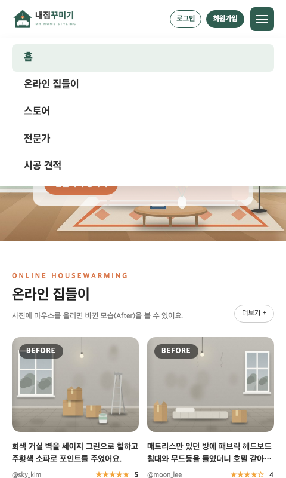
04비주얼 슬라이드 2번 장면열고 3초 뒤 (1→2) (2초마다 1→2→3→2→1…, 좌우 아이콘으로도 같은 순서)
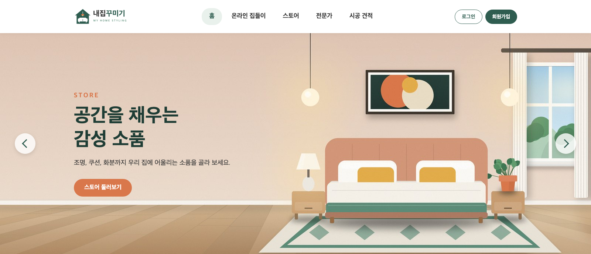
05비주얼 슬라이드 3번 장면열고 5초 뒤 (2→3) (2초마다 1→2→3→2→1…, 좌우 아이콘으로도 같은 순서)
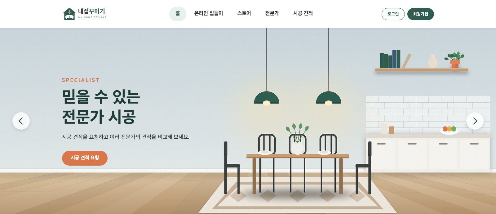
06비주얼 슬라이드 돌아오는 2번 장면열고 7초 뒤 (3→2, 다음은 1) (2초마다 1→2→3→2→1…, 좌우 아이콘으로도 같은 순서)07집들이 Before 사진에 마우스 오버: After 가 왼쪽부터 쓸려 나오는 중두 번째 집들이 사진에 마우스를 올린 직후 (0.9초 전환의 중간)
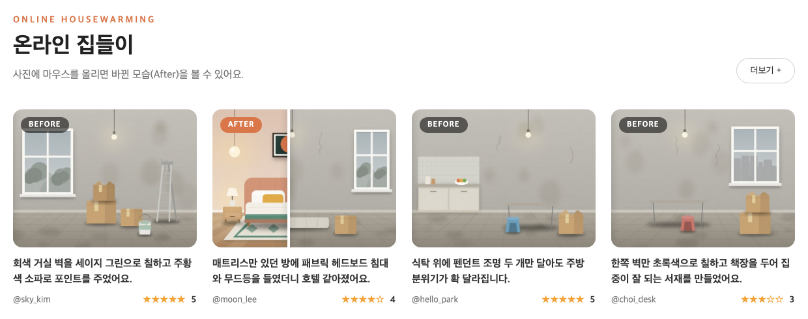
08집들이 마우스 오버 끝: After 사진사진에 마우스를 올리고 1초 기다린다
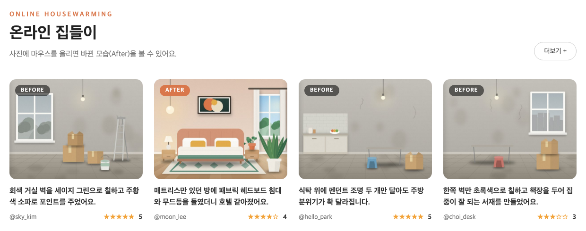
09전문가 사진에 마우스 오버: 카드가 3D 로 뒤집히는 중두 번째 전문가 사진에 마우스를 올린 직후 (0.8초 전환)10전문가 카드 뒷면: 이름, 아이디, 자세히 보기사진에 마우스를 올리고 1초 기다린다
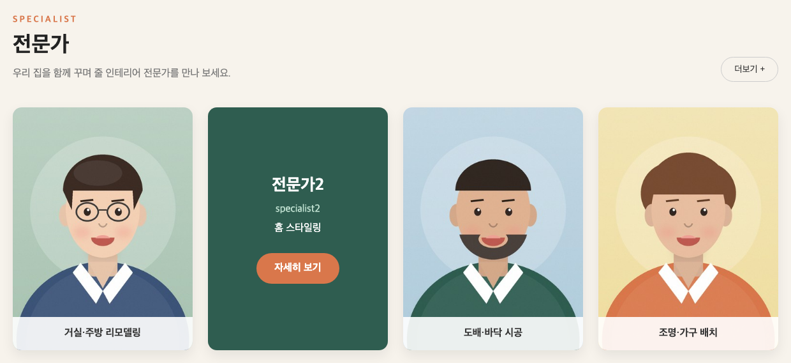
B 모듈 (스토어, 자바스크립트)
01스토어 처음 화면: 검색, 상품 14개(store.json), 드롭 영역, 빈 장바구니XAMPP htdocs 에 B_Module 내용을 넣고 http://localhost/ (여기서는 php -S 로 http://127.0.0.1:8820/)02상품 사진을 끌어 드롭 영역 위에 올린 순간 (끌던 상품은 흐리게, 드롭 영역 강조)원목 사이드 테이블 사진을 마우스로 끌어 오른쪽 점선 영역 위로
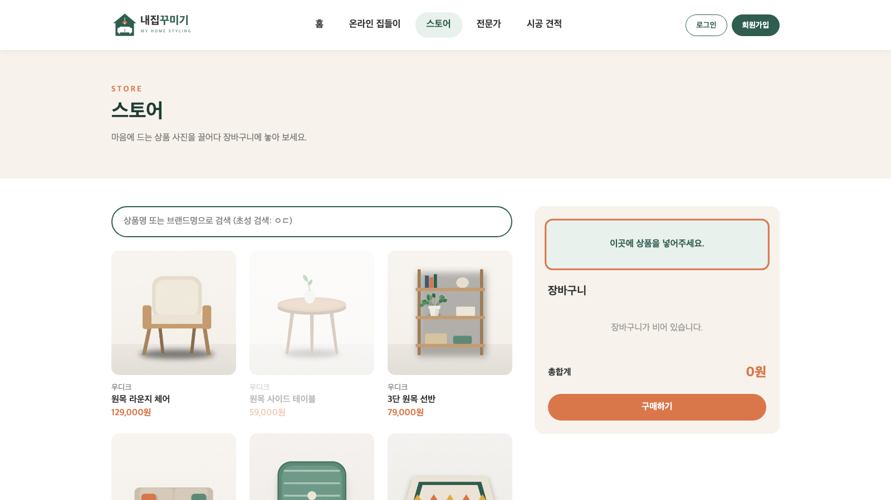
03장바구니: 상품 3개, 무드등 수량 2 → 합계·총합계 자동 계산라운지 체어, 머쉬룸 무드등, 세라믹 화병을 드롭 영역에 놓고 무드등 수량을 2로
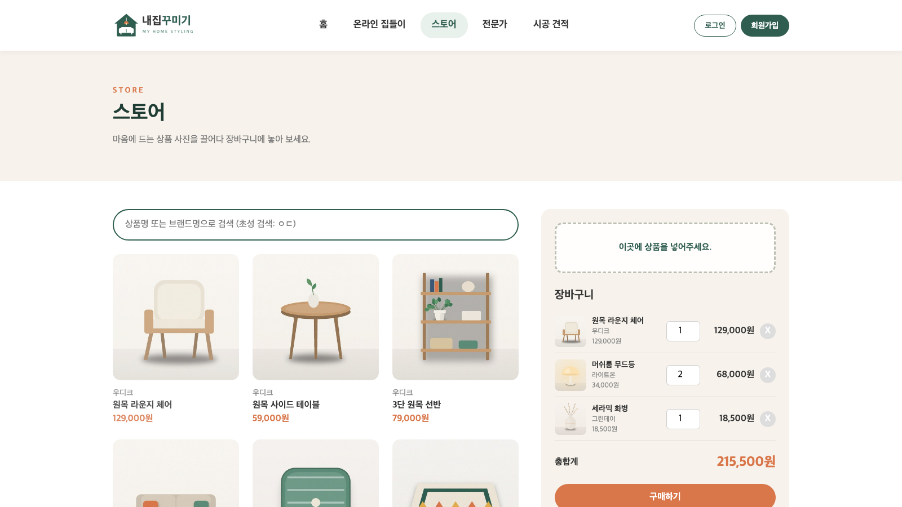
04이미 담긴 상품을 다시 놓음: 메시지 후 상품이 제자리로 튀어 돌아오는 효과장바구니에 있는 라운지 체어를 다시 드롭 영역에 놓는다 메시지: 이미 장바구니에 담긴 상품입니다.05삭제(X) → 장바구니에서 빠지고 총합계 다시 계산세라믹 화병 줄의 X 버튼
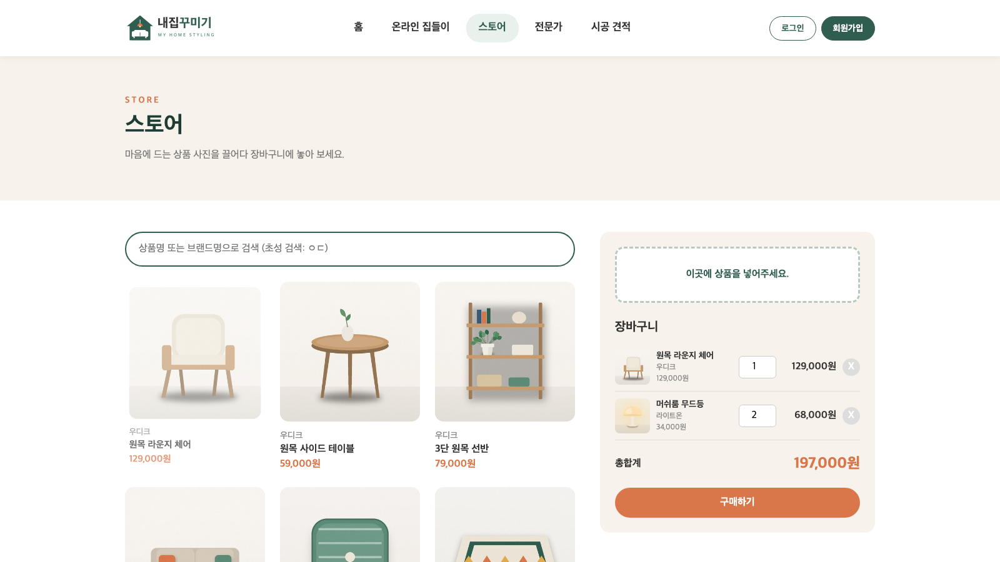
06검색 '라이트': 상품명·브랜드명에 들어 있는 상품만, 키워드 하이라이트검색 칸에 '라이트' 입력 (입력하는 즉시 반영)
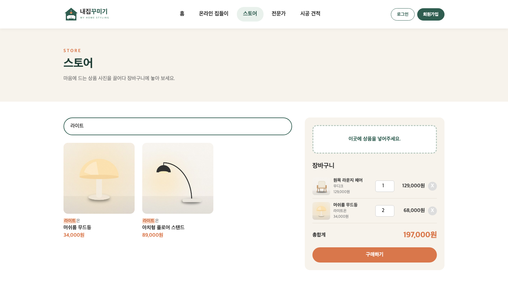
07초성 검색 'ㅇㄷ': 우디크(ㅇㄷㅋ), 사이드(ㅅㅇㄷ), 라운드(ㄹㅇㄷ)검색 칸에 'ㅇㄷ' 입력 (입력하는 즉시 반영)
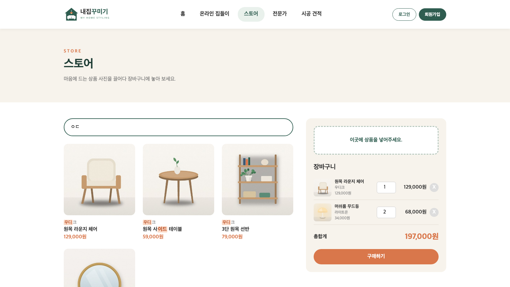
08검색 결과 없음: '일치하는 상품이 없습니다.'검색 칸에 '침대' 입력 (입력하는 즉시 반영)